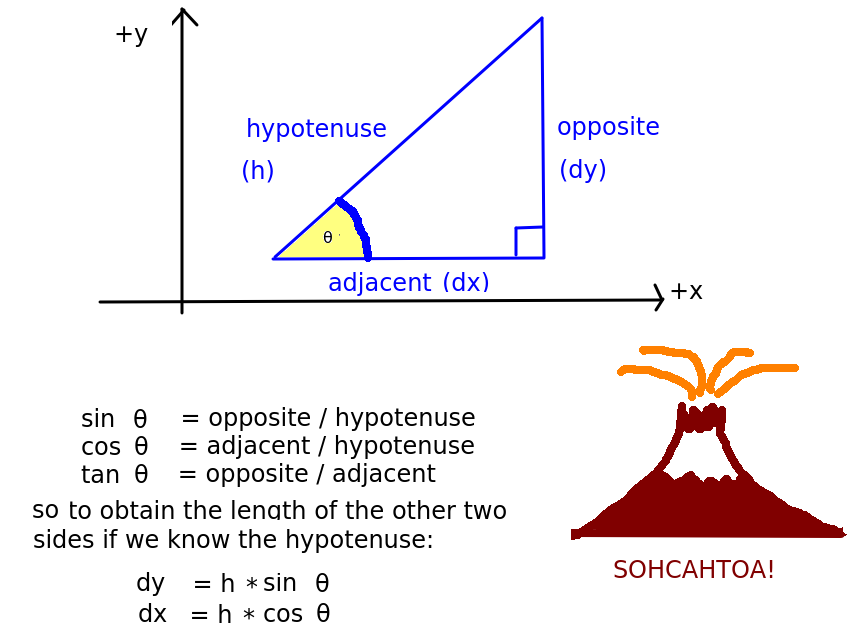
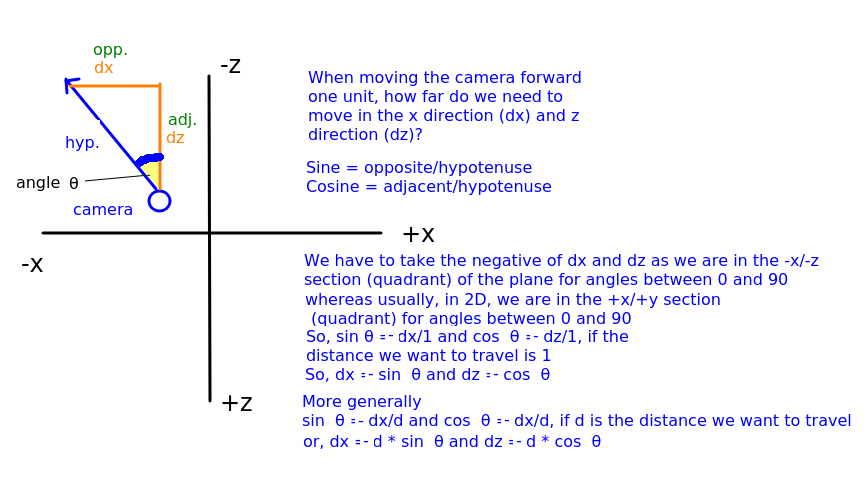
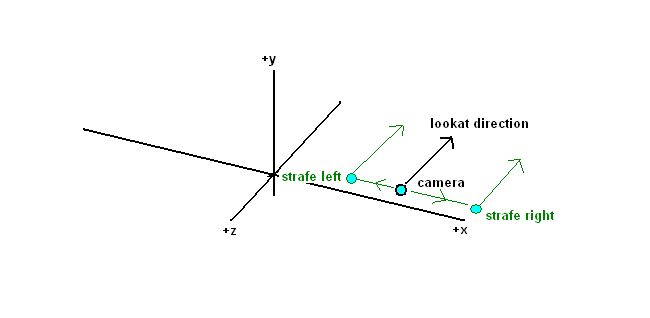
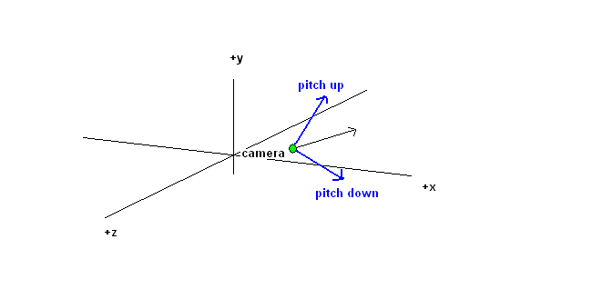

This week we will continue to look at three.js by considering how to develop full screen applications. Last week we created a canvas occupying only part of the screen, but immersive 3D applications more typically take over the full screen. Furthermore we will look at how to handle key events in JavaScript, and look at how we can use basic trigonometry to provide additional camera controls, such as moving forward in the direction the camera is facing.
The example last week just used a canvas with a fixed size: width 640, height 480. However, more commonly, particularly on a mobile platform, we need the canvas to occupy the whole screen. To achieve this, the canvas must adapt to the screen size. So more commonly we will set the canvas to occupy the whole of the screen e.g.:
<canvas id='canvas1' style='display: block; width:100%; height:100%'></canvas>
We also have to, in our CSS, specify that the html and body elements will have a width and height of 100% so that the html (the viewport) and the body (the content) - and thus the canvas, which occupies the whole of the body - will stretch to cover the whole window when the window resizes.
<style>
html, body {
width: 100%;
height: 100%;
}
</style>
Try modifying your HTML in this way: give the canvas 100% width and height
and add some CSS to set the html and body width and height to 100%.
What happens?
You will find that the box appears "blocky" and "pixelated". Why? The problem relates to the difference between canvas width and height and CSS width and height. They are two different things. Even though the canvas will have a CSS width and height which covers the whole screen, its canvas width and height will still be 300x150. This is rather like setting the CSS width and height of an image of 300x150 pixels to 100% of the body. The image will still be 300x150 - its resolution will not magically increase - but it will be stretched across the whole of the page so will appear pixelated with poor resolution. Canvases are internally similar to images in HTML - what we are doing is stretching a 300x150 canvas across the entire screen without increasing the resolution of the actual canvas.
This is shown below. Here is a cube image of dimensions 300x150:
but here is the same image with the CSS width and height set to 900x450 (even though the actual image is still 300x150):
To increase the canvas resolution, we have to reset its width and height properties (these are the canvas width and height) so that they are the same as the CSS width and height of the canvas element. To obtain the CSS width and height of the canvas, we can use canvas.clientWidth and canvas.clientHeight.
What we can then do, in our rendering function, is to test whether the canvas width and height are different to the CSS width and height. If they are (which will occur after a resize), we reset the width and height of the canvas. For example, you can add this code to your renderScene() function:
if(canvas.width != canvas.clientWidth || canvas.height != canvas.clientHeight) {
renderer.setSize(canvas.clientWidth, canvas.clientHeight, false);
}
We call the renderer's setSize() method to perform the resizing rather than directly changing the canvas properties, this ensures that three.js keeps track of the changes.
Once you've updated the canvas size in the previous example, you will still see a problem. Namely, the cube becomes distorted as you resize the window. This is because you have setup a camera with an aspect ratio of 2 (which it will be by default, due to the default canvas size of 300x150) but the canvas no longer has an aspect ratio of 2. So when the renderer is resized, you have to recalculate the aspect ratio of the canvas and reset the camera's aspect ratio appropriately. This can be done with:
camera.aspect = canvas.clientWidth / canvas.clientHeight;
camera.updateProjectionMatrix();
The first line should be obvious. The second updates the projection matrix which we covered last time. If you remember, this matrix is used to draw objects with the correct perspective. The projection matrix depends on the properties of the viewing frustum: the aspect ratio, the field of view, and the near and far clip planes. Once we've updated the aspect ratio, we have to update the projection matrix as this will not be done automatically.
Add the code above to your if statement which handles screen resize. You will find that the box appears correctly as a cube even if you resize the window.
Last week we built a simple application to control the camera via buttons. However in a more realistic application, we would use either the keyboard or the mouse to control the camera and move around the scene. We will therefore now look at key events.
Remember that an event handler arrow function takes one parameter. e. For example:
document.getElementById('btn1').addEventListener('click', e=> {
// event handler code ...
});
What is this parameter e? It is the event object, and it is used to find out information about the event. Useful information about an event might include:
Key events occur when the user presses a key. We make use of the event object when handling key events, to find out which key was pressed. With the growth of in-browser applications resembling traditional desktop applications, handling key events is becoming more useful. Key events include keydown (when the user presses a key down), keypress (when the user presses a key down and up immediately as you normally would when typing) and keyup (when the user releases a key). Here is an example of using key events:
const canvas = document.getElementById('canvas1');
canvas.addEventListener ("keyup", e=> {
// Print out the key code
console.log(`keyCode=${e.keyCode} shift?=${e.shiftKey}`);
// Specifically test whether the user pressed space (32 is code for space)
if(e.keyCode == 32) {
console.log('You pressed a space!');
}
});
Note how handling key events is very similar to handling other types of event such as button clicks. We use addEventListener() on the element which we wish to receive key events, which in this example is the canvas with the ID of camvas1.
Note how we make use of two properties of the event object relating to key events, namely keyCode and shiftKey. keyCode gives us a numerical code (not necessarily the ASCII code) for each key while shiftKey gives us a boolean (true/false) value representing whether the Shift key was pressed or not. keyCode relates to the actual key, so pressing A or Shift/A will return the same value (even though lower case 'a' and capital 'A' have different ASCII codes); we use shiftKey to determine whether Shift was pressed at the same time. You can also use ctrlKey and altKey in the same way, but use of CTRL and Alt during in browser applications is generally not used, as these keys have default actions in the browser window itself.
In the HTML, the canvas must have a tabindex attribute set to 0 (details below):
<canvas id='canvas1' width='400' height='400' tabindex='0'> </canvas>
What is this used for? (Ref: Jonathan Snook). Normally, you cannot focus a canvas by clicking the mouse or tabbing to it, because (unlike text fields, for example) they were not intended for text input. Adding the attribute tabindex with a value of 0 (i.e. tabindex=0) to the canvas allows it to be focused by clicking the mouse on it or tabbing to it. It also allows you to force focus in code using the focus() method, for example:
canvas.focus();
Commonly, we use the keys W (forward), A (left), S (backward) and D (right) in VR applications and games, so I will document the codes of these:
e.keyCode equals 87, 65, 83 or 68 when deciding which direction to move the camera.
Last time we looked at how to move the camera by changing its position. So far we have simply moved the camera along the x, y and z axes. However, in an AR or VR application, we need to move the camera in the direction it's currently facing, in other words move forward. Let's say, for simplicity, we wish to move the camera forward one unit in the direction it's facing, on the xz-plane (ground plane), i.e. we are only moving x and z coordinates, not y. How do we do that? We need to work out how far in the x direction and how far in the z direction to move, and for this, we need some basic trigonometry.
The trigonometrical functions sine, cosine and tangent are used in calculations involving triangles, to work out either the length of the sides, or the size of angles, in a right-angled triangle. These functions take the size of an angle (usually in radians) as parameters. They are particularly used:
sin θ) is the length of the opposite side divided by the length of the hypotenuse;cos θ) is the length of the adjacent side divided by the length of the hypotenuse;tan θ) is the length of the opposite side divided by the length of the adjacent side. Note, however, we are not using the tangent here.
Why are these useful? They are available as functions from programming languages (and on calculators) and can be used to work out the length of the second and third side of a triangle when we know the length of the angle and the length of one side. This is precisely the problem we have with moving our camera: when we move a camera, we know the angle (because that is the angle the camera is currently facing) and we know the hypotenuse (because that is the distance we need to travel), but we need to find out the distance in the x and z directions in order to update the camera position.
This is shown below:

In this case, -dx is the x distance we need to move and -dz is the z distance we need to move. If the distance to travel is d, then we know, from above, that:
cos θ is -dx/d, as the cosine is the adjacent divided by the hypotenuse. Consequently, dx is equal to -d * cos θ.sin θ is -dz/d, as the sine is the opposite divided by the hypotenuse. Consequently, dz is equal to -d * sin θ.It's therefore now easy to move the camera forward d units with the keyboard. Just subtract d * Math.cos(angle in radians) from the camera's x coordinate and d * Math.sin(angle in radians) from the camera's z coordinate whenever the forward key (typically w) is pressed.
You can now use what you learned to develop a simple camera control application which acts more like a VR application or game. Make a copy of your work from last week and:
q to move the camera up one unit and a to move the camera down one unit.z key (key code 90) should rotate the camera anticlockwise by 10 degrees, and the x key (key code 88) should rotate the camera clockwise by 10 degrees.w (key code 87) moves the camera forward one unit. If you get that working, try and code backwards movement of the camera (again, by one unit) with the s key (key code 83).We may not have time for this in the lecture. If we do not, I will still go through it after 13.00, and if you cannot attend beyond the end of the class, please read and/or watch the recording in your own time.
Similar to key events we can also detect mouse events. This can be useful in a 3D application because we can use the mouse to rotate the camera. With mouse events there are three main types:
mousedown: the mouse button is pressed down;mousemove: the mouse is moved;mouseup: the mouse button is released.
const canvas1 = document.getElementById("canvas1");
// This arrow function will handle mouse presses
canvas1.addEventListener ("mousedown", e => {
console.log(`Mouse down pressed! Coordinates are ${e.offsetX},${e.offsetY}`);
});
// This arrow function will handle mouse movement
canvas1.addEventListener ("mousemove", e => {
console.log(`Mouse moved! Coordinates are ${e.offsetX},${e.offsetY}`);
});
// This arrow function will handle mouse release
canvas1.addEventListener ("mouseup", e => {
console.log(`Mouse up pressed! Coordinates are ${e.offsetX},${e.offsetY}`);
});
This example uses two properties of the event object, offsetX and offsetY, which represent the current x and y position of the mouse
with respect to the element it is currently over (e.g. a canvas).
Also available is e.button which gives a different integer depending on which mouse button was pressed. Note that these are 2D coordinates, indicating the pixel position of the event on the canvas; they do not represent the OpenGL 3D coordinate! (As well as 3D applications, this code can be used for 2D graphics, e.g. a paint program which needs to detect where the mouse is to draw lines for example).
I am not expecting everyone to complete this exercise. However, if you are coping reasonably well with the material, I would recommend it.
keydown and keyup events. To do this:
keydown event occurs. This stores the key that was pressed.keyup event occurs (to indicate the key is no longer being pressed).renderScene() function, rather than in your keyup event handler, move the camera according to the current value of this variable. This will repeatedly move the camera while the key is pressed down.e.offsetX when the user presses the mouse down, and store it in a variable.e.offsetX again when the user releases the mouse. If it is greater than the original offsetX, then the user has moved the mouse right, which is equivalent to anticlockwise rotation. If it is less than the original offsetX, then the user has moved the mouse left, which is equivalent to clockwise rotation. So, in the mouse release event handler, move the camera either 1 degree clockwise or 1 degree anticlockwise.This is a more challenging exercise if you complete the first two.
Many cameras have more controls than the simple ones above. Cameras can strafe, i.e. move sideways left or right while facing ahead. They can also pitch - move upwards and downwards while looking in the same ground direction. So if a camera was looking east along the ground, pitching upwards would result in it looking east towards the sky above the ground. These are illustrated below.


Use diagrams to work out the trigonometrical equations necessary to implement strafe and pitch, and implement them in your application.